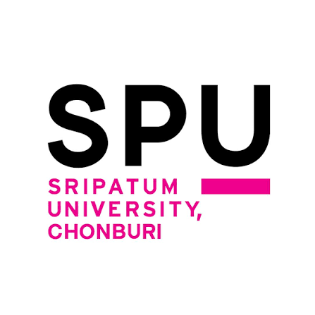

มหาวิทยาลัยศรีปทุม ก่อตั้งขึ้นจากวิสัยทัศน์และความตั้งใจ ของ ดร.สุข พุคยาภรณ์ ที่มุ่งมั่นสร้างสถาบันการศึกษา ที่จะเป็นรากฐานในการพัฒนาประเทศชาติ ผ่านการผลิตบุคลากร ที่มีความรู้ และความสามารถ ซึ่งจะเป็นพลังสำคัญในการส่งเสริม ความเจริญก้าวหน้าแก่สังคมไทย มหาวิทยาลัยศรีปทุมยึดมั่นในปณิธานที่จะสร้างบัณฑิตที่มีคุณภาพ และความรู้ในศาสตร์หลากหลายแขนง ทั้งด้านทฤษฎีและการปฏิบัติ พร้อมทั้งมุ่งเน้นให้บัณฑิตสามารถใช้ชีวิตในสังคมอย่างมีความสุข ประกอบอาชีพอย่างมีคุณภาพ คุณธรรม และสามารถพัฒนาสังคมต่อไป มหาวิทยาลัยศรีปทุมเป็นหนึ่งในห้าสถาบันอุดมศึกษาเอกชน แห่งแรกของประเทศไทย โดยก่อตั้งขึ้นเมื่อวันที่ 28 พฤษภาคม พ.ศ. 2513